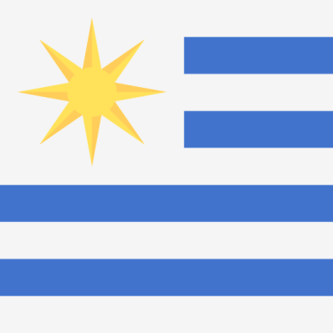
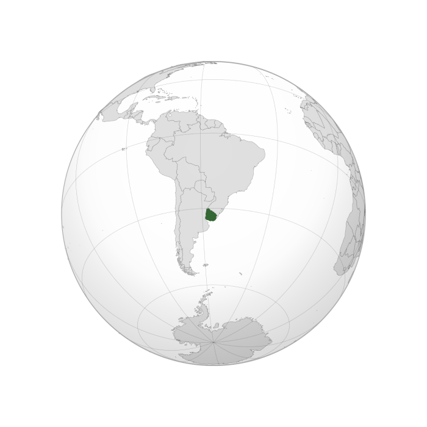

Uruguay Flag
FIFA, football's international governing body, selected Uruguay as the host nation, as the country would be celebrating the centenary of its first constitution and the Uruguay national football team had retained their football title at the 1928 Summer Olympics. All matches were played in the Uruguayan capital, Montevideo, the majority at the purpose built Estadio Centenario.

Uruguay Location
FIFA, the governing body of world football, had been discussing the creation of a competition for national teams for several years prior to 1930. The organisation had managed the football segment of the Summer Olympics on behalf of the International Olympic Committee since the early 20th century and the success of the competition at the 1924 and 1928 Olympic Games led to the formation of the FIFA World Cup. At the 17th FIFA congress, held in Amsterdam in May 1928, the competition was proposed by president Jules Rimet and accepted by the organisation's board, with vice-president Henri Delaunay proclaiming "international football can no longer be held within the confines of the Olympics".